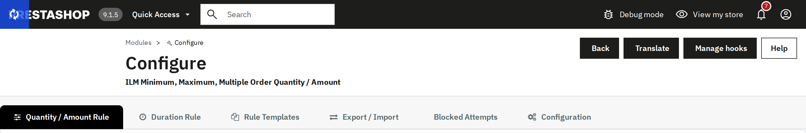

Everything in this module is reached from one Configure screen, split into six tabs. Each tab owns one job, so nothing you do on one tab silently affects another.

- Quantity / Amount Rule — set the actual Min/Max/Multiple/Amount limits per product, category, brand, supplier or customer group, with conditions, for everyone or one customer; switch rules on and off.
- Duration Rule — decide the time window a limit counts over (this order only, a rolling window, a customer's lifetime total, etc.) and which order statuses count.
- Rule Templates — save a reusable Min/Max/Multiple/Amount combination once, then apply it to any row in one pick.
- Export / Import — back up or bulk-edit every rule as a CSV file.
- Blocked Attempts — a live log of the last 50 times a rule actually stopped a customer.
- Configuration — turn features on/off, set the whole-shop (Global) rule, the rule-priority order, checkout protection, and every customer-facing message.
Every field on every tab saves itself the moment you leave it (Auto Save) — there is no separate global "Save" button to remember to click, unless a specific screen says otherwise.